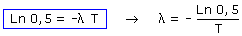
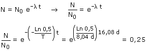

 Ecuación de desintegración:  Vamos a justificar el resultado: Cada 8.04 días, la cantidad de sustancia radioactiva se reduce a la mitad por tanto el porcentaje de sustancia restante será: 100% (0 d), 50% (8.04 d), 25% (16.08 d) Efectivamente en 16.08 días la muestra se reduce a la cuarta parte Si inicialmente había 1012 átomos, al cabo de 16.08 días quedarán: 0.25·1012 = 2.5·1011 Si inicialmente había 2 átomos, al cabo de
16.08 días quedarán: 0.25·2 = 0.5. Con esto se aprueba, pero el asunto tiene más miga La radioactividad es un fenómeno probabilístico Al arrojar una moneda al aire la probabilidad
de que salga cara es del 50% como sabemos todos. Con la radioactividad pasa algo parecido. λ es la probabilidad de que se desintegre uno de los átomos en un segundo. En una muestra de N átomos ¿se desintegrarán λ·N cada segundo?. Pues depende del valor de N, si es muy grande seguro que sí. La ecuación de desintegración
radioactiva da por sentado que el número de átomos es muy
grande de forma que es verdad que cada segundo se desintegran λ·N
átomos. Y de esta ecuación resulta que el tiempo que tarda
en reducirse a la mitad una cantidad de átomos (Grande) es siempre
la misma. Resumiendo: Partiendo de 2 átomos no se puede afirmar cuántos quedarán al cabo de 16.08 días, puede que queden 2, 1 o 0 (Es como hacer quinielas) |